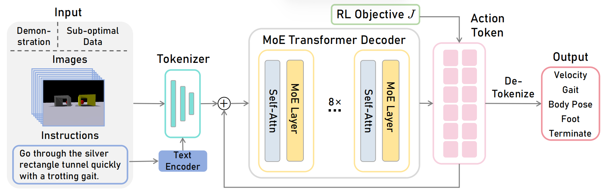

GeRM:
A Generalist Robotic Model with Mixture-of-experts for Quadruped Robots
- Wenxuan Song
- Han Zhao
- Pengxiang Ding
- Can Cui
- Shangke Lyu
- Yaning Fan
- Donglin Wang*
*corresponding author
MiLAB, Westlake University, China
IROS2024
Abstract
Multi-task robot learning holds significant importance in tackling diverse and complex scenarios. However, current approaches are hindered by performance issues an difficulties in collecting training datasets. In this paper, we propose GeRM (Generalist Robotic Model). We utilize offline reinforcement learning to optimize data utilization strategies to learn from both demonstrations and sub-optimal data, thus surpassing the limitations of human demonstrations. Thereafter, we employ a transformer-based VLA network to process multimodal inputs and output actions. By introducing the Mixtureof-Experts structure, GeRM allows faster inference speed with higher whole model capacity, and thus resolves the issue of limited RL parameters, enhancing model performance in multitask learning while controlling computational costs. Through a series of experiments, we demonstrate that GeRM outperforms other methods across all tasks, while also validating its efficiency in both training and inference processes. Additionally, we uncover its potential to acquire emergent skills. Additionally, we contribute the QUARD-Auto dataset, collected automatically to support our training approach and foster advancements in multi-task quadruped robot learning. This work presents a new paradigm for reducing the cost of collecting robot data and driving progress in the multi-task learning community.
Approach
GeRM takes both demonstration and sub-optimal data as input. Then the images and instructions are tokenized and sent into the GeRM mixture-of-experts Transformer Decoder to generate action tokens. They are finally de-tokenized into discretized robot commands. The actions are used for RL objectives when training.

GeRM MoE Decoder is a transformer decoder-only model where the Feed-Forward Network (FFN) picks from a set of 8 distinct groups of parameters. At every layer, for every token, the gating network chooses two of the “experts to process the token and combine their output additively. Different experts are proficient in different tasks/different action dimensions to solve problems in different scenarios, learning a generalist model across multiple tasks. This technique increases the network parameter volume while keeping the computational cost basically unchanged.
We utilize a vision-language-action (VLA) model to generate the robot action tokens, and then detokenize them into 12-dimension commands by low-level control policy.
The 12-dimension commands include:
Finally, we utilize the effective offline RL algorithm - Deep Q-Learning to learn the optimal policy from mix-quality data. Specifically, we adopt designs akin to GeRM by employing the VLA model to replace the value function and output discretized action.
Datasets
We proposed an autonomous diagram to collect robot multi-modal data. In this way, We construct a large-scale robot dataset - QUARD-Auto, with a combination of demonstrations and sub-optimal data. It includes 5 tasks and 99 sub-tasks, totally 257k episodes (trajectories). This dataset will be accessible several months subsequent to its organization. Kindly visit our GitHub page to obtain the dataset at that time.
Results and Videos
We conducted a comprehensive and robust series of experiments. To ensure data fidelity and mitigate the impact of stochastic variability, our primary experiments for each model encompassed the entirety of tasks including all 99 sub-tasks, with 400 trajectories meticulously tested for each.
GeRM has the highest success rate among all tasks. Compared to such baselines as RT-1 and other varieties of GeRM, it effectively learns from mix-quality data, outperforms other methods, and demonstrates superior capabilities in multi-tasks. Meanwhile, MoE Modules balance computational cost and performance by activating part of the parameterwhen inference.
GeRM exhibits commendable training efficiency. Compared to other methods, Germ achieves extremely low loss and high success rates with only a few batches. This evaluation exclusively trained with demonstrations underscores GeRM's proficiency in optimizing data utilization strategies.
Solid lines represent the success rate, dotted lines represent the final success rate for 20 epochs, and dashed lines represent loss. Note: RL approaches employ MSE loss, which should be scaled by 0.1, while imitation learning ways employ Cross Entropy as the loss function.
GeRM shows emergent skills in dynamic adaptive path planning. As shown in this video, the quadruped robot's vision is limited at the initial position, hampering its ability to determine the direction of movement. To avoid the obstacle it turns to the left randomly. Subsequently, upon encountering the incorrect visual input, the robot executes a substantial reorientation to align with the correct target outside its original field of view. It then proceeds to steer towards the destination, ultimately accomplishing the task. Notably, such trajectories were out-of-distribution of our training dataset. This demonstrates that GeRM inherits novel capabilities in terms of dynamic adaptive path planning in the context of the scene, which means it can make decisions, plan future paths, and change next-step action according to the visual perception.
Citation
The website template was borrowed from Jon Barron.